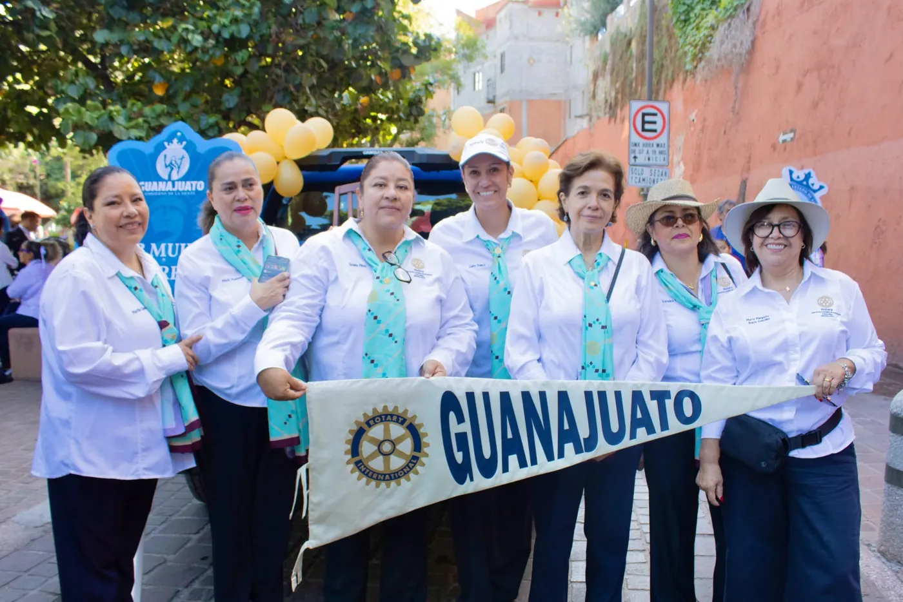
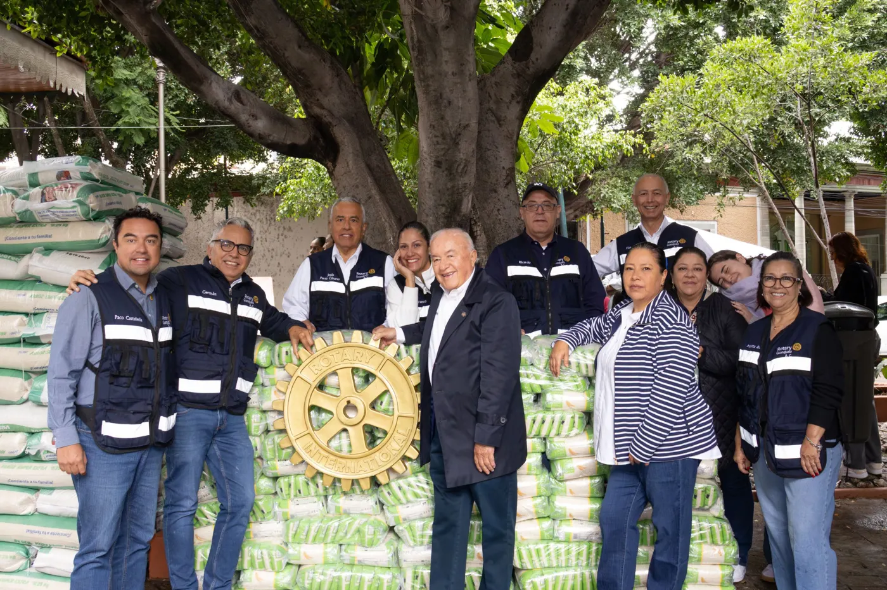
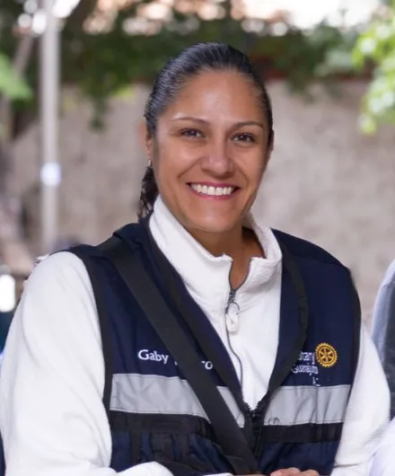
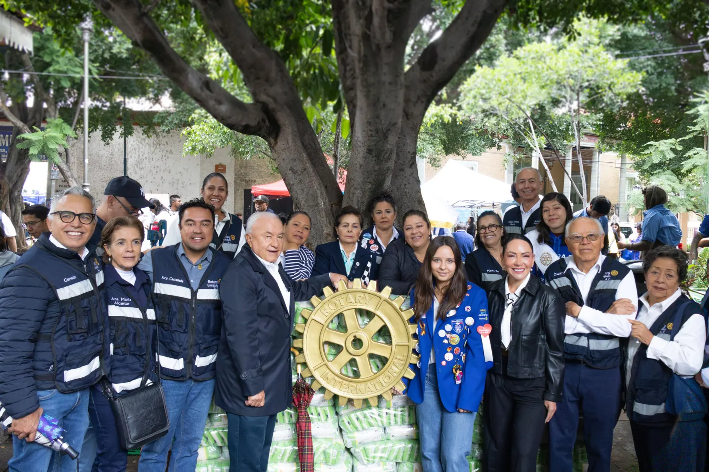
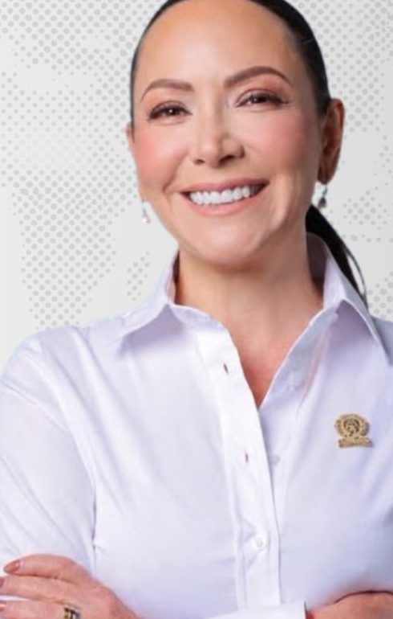
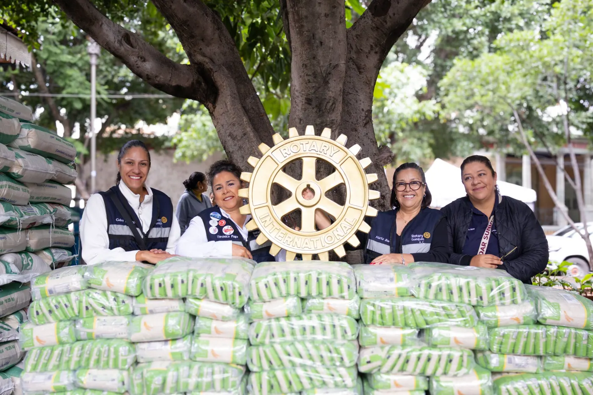

Servir para transformar
Impulsar el bienestar de las familias de Guanajuato a través de proyectos de servicio sostenibles, sumando el liderazgo, la amistad y los recursos de nuestras socias y de la red rotaria.
Rotary International · Distrito Guanajuato
Somos el Club Rotario Satélite Galereñas: una red de mujeres que ponen su tiempo, su talento y sus recursos al servicio de la comunidad. Unimos la tradición de más de un siglo de Rotary con una forma moderna y cercana de servir.
“Una red de personas comprometidas con mejorar Guanajuato.”
Los valores rotarios de siempre, con proyectos y comunicación de hoy.
Acciones concretas en colonias, escuelas y comunidades de Guanajuato.
Cada proyecto tiene nombre y rostro: el de nuestras socias.
Celebramos los logros de nuestras socias y de quienes sirven a la ciudad.
Quiénes somos
El Club Rotario Satélite Galereñas nació de la convicción de un grupo de mujeres de Guanajuato: que el servicio organizado puede cambiar la vida de su comunidad. Como club satélite, formamos parte de la red de Rotary International y trabajamos con la flexibilidad de un grupo cercano, ágil y comprometido.
Nuestro nombre honra a las galereñas, las mujeres de esta ciudad de túneles, callejones y tradición minera. Desde aquí servimos en salud, educación, apoyo a familias y cuidado del entorno.
Pertenecemos a una organización con más de un siglo de historia y 1,2 millones de socios en más de 200 países y regiones, que se unen para resolver problemas y atender las necesidades de su comunidad.

Nuestras socias
Entrega al Banco de AlimentosImpulsar el bienestar de las familias de Guanajuato a través de proyectos de servicio sostenibles, sumando el liderazgo, la amistad y los recursos de nuestras socias y de la red rotaria.
Ser un club de referencia en el estado por el impacto medible de sus proyectos y por formar mujeres líderes comprometidas con su comunidad.
Ser rotaria
Periodo rotario 2026–2027

Gaby, como la conocen sus compañeras, encabeza este periodo al Club Rotario Satélite Galereñas. Es una socia de trabajo en campo: participa de forma directa en las actividades del club, como la entrega de 1,2 toneladas de alimento al Banco de Alimentos, y representa a las Galereñas en los eventos de la familia rotaria de Guanajuato.
“Queremos que cada proyecto tenga un rostro y un resultado. Invitamos a más mujeres de Guanajuato a servir con nosotras.”
Proyectos e impacto social
Nuestros proyectos siguen las áreas de interés de Rotary International y se enfocan en las necesidades reales de Guanajuato.

Proyecto insigniaJunto con la familia rotaria de Guanajuato reunimos y entregamos costales de arroz y productos básicos al Banco de Alimentos, para llegar a las familias de la ciudad que más lo necesitan.
Paquetes escolares, becas y círculos de lectura en escuelas públicas de la ciudad.
Filtros y captación de agua de lluvia para escuelas y familias de comunidades rurales del municipio.
Reforestación en la sierra y en presas de la ciudad, con jóvenes de Interact y Rotaract.
Talleres de finanzas, ventas digitales y mentoría para artesanas y emprendedoras guanajuatenses.
Cifras de Rotary International, según rotary.org.
Nuestras socias
Profesionistas, empresarias, servidoras públicas y madres de familia que comparten una misma vocación: servir a Guanajuato.

Presidenta Municipal de Guanajuato. Felicitamos a nuestra socia por la presentación de su segundo Informe de Actividades y reconocemos los resultados de su gobierno municipal.
Reconocer a quienes sirven a la ciudad también es parte de nuestro servicio.

Buscamos mujeres de Guanajuato con ganas de aportar su talento. También recibimos aliados, donantes y voluntarios.
Contacto
Escríbenos para colaborar en un proyecto, integrarte al club o invitarnos a tu comunidad.